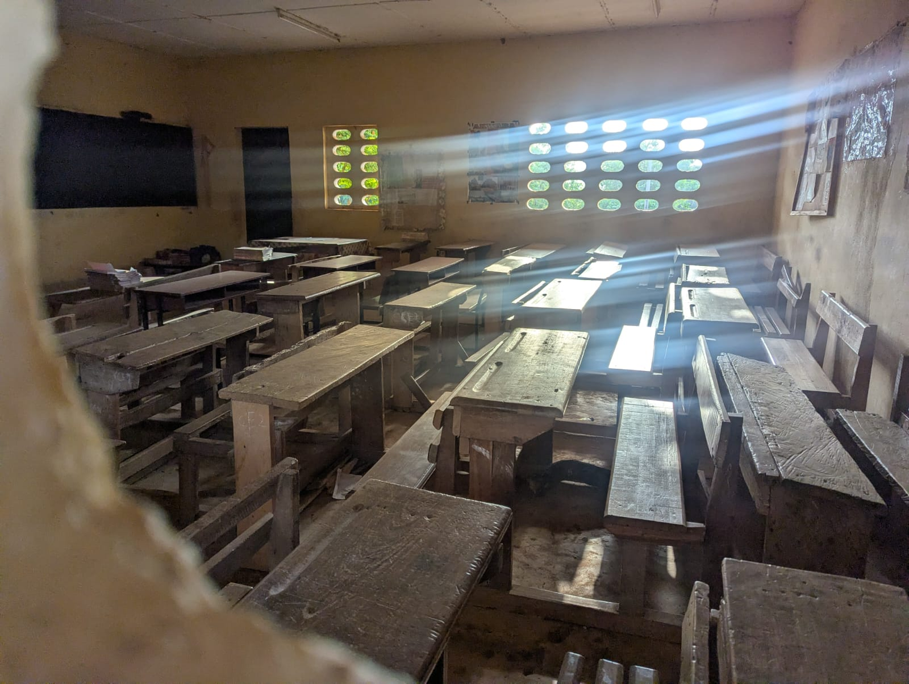

FACIG
Awâllé
Danse africaine à Rosheim et alentours, stages, musique live et actions solidaires à Guéménédou, en Côte d'Ivoire.

Entre l'Alsace et la Côte d'Ivoire
FACIG Awâllé est née d'un lien direct avec Guéménédou. L'association réunit aujourd'hui danse, musique, bénévolat et projets de solidarité.
F.A.C.I.G. signifie France Alsace Côte d'Ivoire Gagnoa. Awâllé signifie « aimons-nous » en bété : un nom qui résume l'esprit de l'association.
Cours de danse africaine
Un rendez-vous hebdomadaire sportif, convivial et accessible à tous les niveaux, accompagné de percussions live.
Saison 2026-2027
- Quand
- Tous les lundis, 20h-21h15
- Où
- Salle du Pilier des Arts, Rosheim
- Danse
- Cyrille Zouzoua
- Percussions
- Moussa Ira
- Première séance
- 14 septembre 2026 — gratuite
- Tarif annuel
- 250 € — cours + adhésion FACIG Awâllé

Stages & animations
Des rendez-vous ponctuels autour de la danse, de la musique et des cultures africaines, à Rosheim et ailleurs en Alsace.

Des projets concrets au village
L'association agit aux côtés de la communauté de Guéménédou, notamment autour de l'école, du dispensaire et des besoins locaux.
Les adhésions, les manifestations et les dons permettent de soutenir des actions utiles et identifiées avec les personnes sur place.